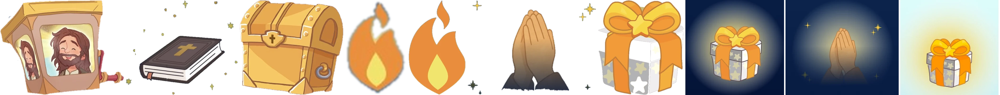
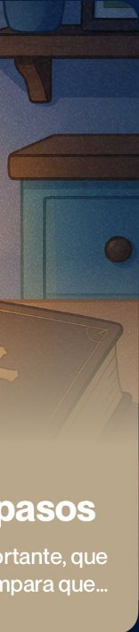
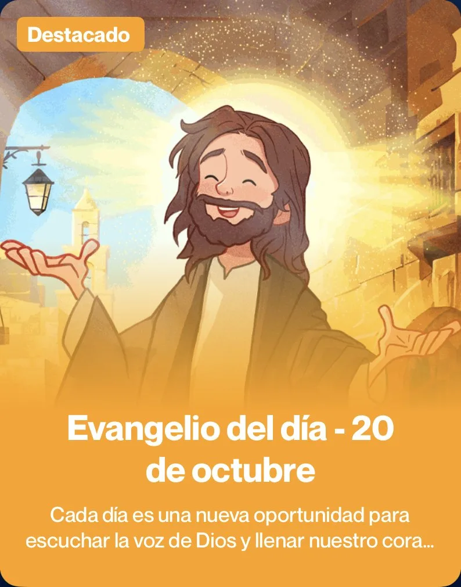
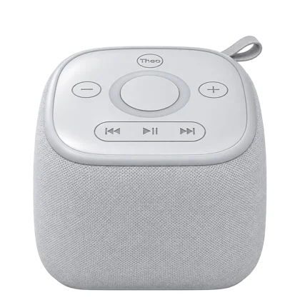
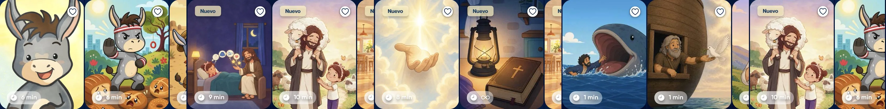

Ces
3



Daily Missions
WorldsDiscover itToday's StoryFreeGospel of the DayFreeToday's AffirmationFreeNew
Meet TheoBox
Place one of 9 Theolings on top and its Bible story begins.



Meet Theodore

Hi! I'm TheodoreAudio StoryTheodore and TemperanceAudio StoryNew Releases
A Peaceful MindStoryFluffy and the Shepherd's VoiceMeditationRecommended
Who Is God the Father?StoryA Lamp to My FeetAffirmationFeatured Videos
JonahVideo StoryNoah's ArkVideo StoryTop 10 Today in Colombia
1Fluffy and the Shepherd's VoiceMeditation2Your Streak
Finish one story a day to grow your streak.
3 days
Did your family pray today?
12,384,140
Prayers prayed with Theo
ShareEncourage others to pray by gifting them access to the Theo app.
Gift Theo